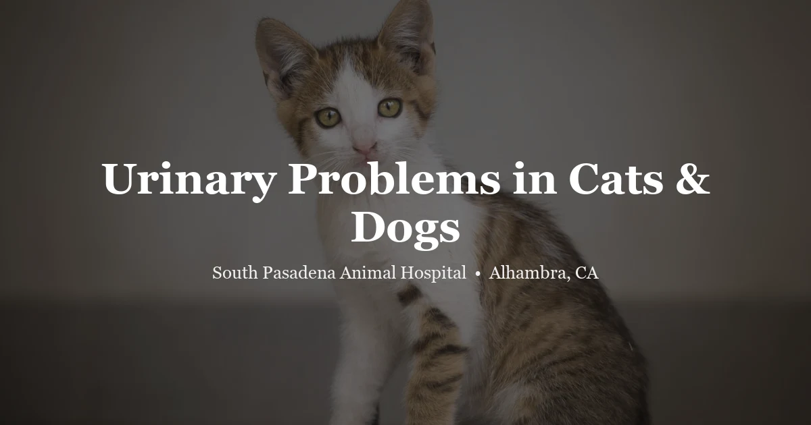

April 25, 2026 · 8 min read
Urinary Problems in Cats & Dogs: Signs, Causes & What Vets Do

Urinary problems bring owners in urgently — and rightly so. A cat going in and out of the litter box, crying, producing nothing — that's one of the more stressful things to watch, and in male cats it can be life-threatening within 24 hours. Blood in a dog's urine is alarming for different reasons. And leakage in a sleeping spayed female is something else entirely.
Same category — urinary symptoms — very different underlying conditions, and very different urgency levels. Here's how we sort through it.
Signs That Point to a Urinary Problem
- Frequent trips to the litter box or outside, producing small amounts each time
- Straining, squatting, or crying during urination
- Pink, red, or dark brown urine
- Urinating in unusual locations — on the floor, outside the box, in the house
- Excessive licking at the genitals
- Strong or different-smelling urine
- Lethargy, appetite loss, or vomiting alongside urinary signs
- A distended or painful abdomen
The most important question to answer: is your pet actually producing urine? Straining with some urine coming out is one situation. Straining with no urine coming out is another — that's a potential obstruction, and it's an emergency.
FLUTD — What That Actually Means
FLUTD is a catch-all. Feline lower urinary tract disease. It covers everything affecting the bladder and urethra in cats, and from the outside, most of the conditions under it look exactly the same — straining, frequent litter box visits, bloody urine, vocalizing. The causes are very different.
Feline Idiopathic Cystitis
Most common FLUTD diagnosis in younger and middle-aged cats. Bladder inflammation with no bacterial cause — the urinalysis comes back clean for bacteria, but the cat is clearly uncomfortable. What drives it is stress. A new pet in the house. A move. Someone's schedule changed. Multi-cat tension they're not broadcasting. A bored indoor cat who never leaves the couch. We've seen it triggered by something as mundane as a new piece of furniture the cat didn't like.
Management means reducing stress first — more litter boxes (one more than your cat count, kept clean), Feliway diffusers, wet food, water fountains, more environmental enrichment. Most episodes settle within a week. What owners miss is that without fixing the stress trigger, it comes back. We see cats for their third or fourth FIC episode all the time, and the conversation is almost always about what changed in the household.
Crystals and Bladder Stones
Minerals drop out of solution in urine under the right pH and concentration conditions. Struvite crystals form in alkaline urine — often linked to infection. Calcium oxalate forms in acidic urine and has a breed predisposition (Persians, Himalayans, Ragdolls get this more than most). Crystals irritate the bladder wall; if they accumulate into stones, they can obstruct the urethra — especially dangerous in male cats.
We need urinalysis to identify the crystal type, and X-rays or ultrasound to check for formed stones. Struvite stones sometimes dissolve on a prescription diet if we address the infection driving them. Oxalate stones won't dissolve. Surgery to remove them.
Bacterial UTI in Cats
Actually less common than most people expect, especially in younger cats — where FIC is more likely. True bacterial UTIs become more common in older cats, diabetic cats, and cats with kidney disease, where urine becomes dilute and easier for bacteria to colonize. A urinalysis gives us clues, but we need a urine culture to know the actual organism and choose an antibiotic that will work against it. A lot of UTI treatment failures happen because of incomplete cultures and empirical antibiotic choices that miss the target.
Male Cat, Can't Urinate — This Is an Emergency
Male cats have a long, narrow urethra that blocks easily — crystals, mucus plugs, stones. A blocked cat cannot urinate at all. Toxins accumulate. Potassium rises to dangerous levels. The bladder distends and can rupture. All of this within 24–48 hours.
What it looks like: in and out of the box constantly, crying, producing nothing. Lethargic. Not eating. Abdomen tense and painful. In advanced cases, collapse.
Don't watch overnight to see how it goes. Don't wait until morning. A cat who hasn't passed urine in 8–12 hours and is straining — go to a vet or emergency clinic now. Call ahead: (626) 441-1314. Treatment is hospitalization, urethral catheterization, IV fluids, monitoring until stable. Most cats do well with prompt care. After the first blockage, dietary changes and increased water intake dramatically reduce recurrence risk — but that conversation can happen after we've unblocked him.
Urinary Problems in Dogs
Dogs obstruct less often than male cats, but urinary problems are still common — just usually for different reasons. Female dogs get bacterial UTIs far more often than males. Shorter, wider urethra makes bacterial ascent easy. The classic presentation: frequent small-volume urination, straining, blood in urine, accidents in the house from a dog who's normally reliable.
Bladder stones happen in dogs too. Some — struvite especially — dissolve on a prescription diet if we catch them before surgery is needed. Calcium oxalate stones don't dissolve. We find them on X-rays or ultrasound. Treatment depends on size, location, and type.
Incontinence in spayed females is a different category entirely. Leakage during sleep or rest, wet spots on bedding. Not a UTI. It's reduced urethral sphincter tone — responds well to medication. We see it often in medium and large-breed spayed dogs as they age.
Intact male dogs develop prostate problems over time — prostatic hyperplasia, cysts, prostatitis. Straining to urinate, blood in urine, sometimes difficulty defecating. Neutering resolves benign hyperplasia. Active infection or abscess needs additional treatment.
Any dog with blood in the urine needs a urinalysis. In older intact females especially, bladder tumors present identically to a UTI and get caught on ultrasound — which is why we don't just treat and skip the imaging.
Rabbits and Guinea Pigs
Rabbit urine looks alarming to owners who've never seen it — cloudy, white, sometimes reddish-orange. That's normal calcium carbonate and plant pigments. Actual blood in rabbit urine is a different finding. In intact females over three years old, it often points to uterine adenocarcinoma. That's not a rare cancer — it's actually very common in intact female rabbits, which is one reason we strongly recommend spaying before age two.
Bladder sludge in rabbits (thick calcified urine deposits) causes straining and reduced urine output. Diet is often part of the cause — too much calcium from excessive leafy greens. Management includes diet changes, hydration, and sometimes bladder flushing under sedation.
Guinea pigs get both UTIs and bladder stones. Straining, crying when urinating, blood in urine. High-calcium diets are a contributing factor — excessive kale, spinach, romaine. Stones in guinea pigs often need surgical removal. Older male guinea pigs can also develop perineal sac impaction — very different problem, very different solution, but both involve straining and discomfort. Worth a vet visit to distinguish them.
How We Work It Up
At our Alhambra clinic, we start with urinalysis — specific gravity, pH, protein, glucose, blood, white cells, bacteria, sediment under the microscope. If infection is suspected, we add a urine culture and sensitivity test. Culture takes a few days but tells us the actual organism and what antibiotics will work against it. Treating empirically without a culture is one of the main drivers of recurrent UTIs we see in dogs.
Abdominal X-rays for most stone types. Ultrasound for radiolucent stones, bladder wall thickness, kidney involvement. Bloodwork for older patients or any animal with systemic signs like lethargy and reduced appetite alongside the urinary symptoms.
One thing we push on: follow-up urinalysis 5–7 days after finishing antibiotics. The infection may have cleared — or not. Most owners skip this step because the symptoms are gone. We'd rather know for certain it's clear than treat the inevitable recurrence in two months.
Frequently Asked Questions
My cat is straining in the litter box — is this an emergency?
Some urine coming out: same-day vet visit. No urine at all, crying in pain, lethargic, abdomen tense: go right now — emergency clinic if we're closed. A blocked cat is fatal within 24–48 hours without treatment. Don't watch overnight on this one.
What is FLUTD and how is it treated?
Umbrella term for feline lower urinary tract conditions. The most common cause in younger cats is idiopathic cystitis — stress-triggered inflammation, no bacteria. Management: stress reduction, wet food, water fountains, more litter boxes, Feliway. Most episodes resolve within a week. Recurrence is common without fixing the stress trigger — which is the part most owners skip.
Can stress cause urinary problems in cats?
Yes, and we see it constantly. Feline idiopathic cystitis is directly stress-driven. New pets, moves, schedule changes, litter box placement, multi-cat tension, boredom — all real triggers. Wet food and a water fountain are the two most accessible changes that genuinely help. Environmental enrichment — puzzle feeders, window perches, vertical space — is underrated.
How do I know if my dog has a UTI?
Frequent urination with small volumes, straining, blood-tinged urine, licking at the genitals, accidents from a reliable dog. Female dogs are far more prone than males. Diagnosis needs both urinalysis and urine culture — the culture identifies the organism so we can choose an antibiotic that actually works against it. Book an exam.
What causes crystals in cat or dog urine?
Minerals fall out of solution when pH and concentration reach certain thresholds. Struvite forms in alkaline urine — often linked to infection. Calcium oxalate forms in acidic urine, with a genetic predisposition in certain breeds. Diet, water intake, and underlying conditions all contribute. Urinalysis identifies the type. Management depends on which type — some dissolve on diet, others need surgery.